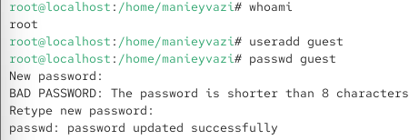
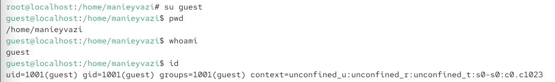
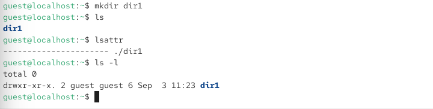
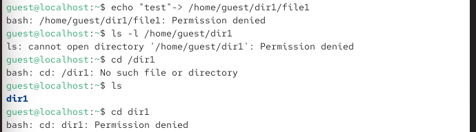
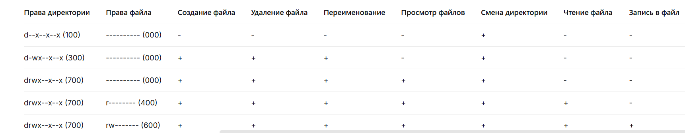

6.октябрь.2026
Отчёт по лабораторной работе № 2 Дискреционное разграничение доступа в Linux (атрибуты файлов)
Получение практических навыков работы в консоли с атрибутами файлов, закрепление теоретических основ дискреционного разграничения доступа в современных системах с открытым кодом на базе ОС Linux.
Действие: Создать учётную запись и задать пароль (от имени администратора).

Рис. 1 — Пользователь guest создан, пароль установлен.
Действие: Войти в систему как guest (или переключиться).

Рис. 2 — Вы вошли как guest.
Действие: Определить, в какой директории вы находитесь, и сравнить с приглашением командной строки.
Рис. 3 — /home/guest (домашняя директория). Если нет — перейти командой cd ~.
Действие: Уточнить имя текущего пользователя.
Рис. 3 — guest
Действие: Вывести UID, GID и членство в группах.
Рис. 3 — Сравнить вывод id с groups — списки групп должны совпадать.
Действие: Сравнить имя пользователя из id/whoami с приглашением. Результат: Приглашение вида [guest@hostname ~]$ — имя совпадает.
Действие: Просмотреть системную базу пользователей и найти свою учётную запись. Только своя строка:

Рис. 4 - cat /etc/password
Действие: Проверить расширенные атрибуты на поддиректориях /home.

*Рис. 5 — Видны атрибуты своей директории (например, ————–e—–). Атрибуты директорий других пользователей не видны из-за ограничений прав (без sudo).
Действие: Создать поддиректорию и посмотреть права и атрибуты.

Рис. 6 — создали директорий
Действие: Установить права 000 и проверить.

Действие: Попытаться создать файл в директории без прав.

Рис. 8 — У директории нет прав w (запись) и x (выполнение) для владельца, поэтому создание файла запрещено. Сообщение об ошибке не создаёт файл.
Директория пуста (файл file1 отсутствует)

table:
Операции для тестирования:
| Операция | Команда |
|---|---|
| Создание файла | echo “test” > dir1/newfile |
| Удаление файла | rm dir1/file1 |
| Переименование файла | mv dir1/file1 dir1/file2 |
| Просмотр файлов | ls dir1 |
| Смена директории | cd dir1 |
| Чтение файла | cat dir1/file1 |
| Запись в файл | echo “data” >> dir1/file1 |
| Ключевые выводы: | - |
|---|
x на директории: необходим для входа в директорию и доступа к файлам внутри. w на директории: необходим для создания, удаления и переименования файлов. r на директории: необходим для просмотра списка файлов. r на файле: необходим для чтения содержимого. w на файле: необходим для изменения содержимого. x на файле: необходим для запуска файла как программы.
Заполнение таблицы 2.2 — «Минимально необходимые права» Действие: На основе таблицы 2.1 определить минимальные права для каждой операции.
Таблица 2.2:
| Операция | Минимальные права директории | Минимальные права файла |
|---|---|---|
| Создание файла | -wx (300) | — (000) |
| Удаление файла | -wx (300) | — (000) |
| Переименование файла | -wx (300) | — (000) |
| Просмотр файлов | r-x (500) | — (000) |
| Смена директории | –x (100) | — (000) |
| Чтение файла | –x (100) | r– (400) |
| Запись в файл | –x (100) | -w- (200) |
получены практические навыки работы с атрибутами файлов и закреплены теоретические основы дискреционного разграничения доступа в Linux.